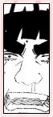
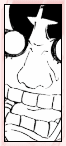

| » Gai Sensei ;
Maito Gai is Lee's instructor. He first appears in chapter 37/episode 22 to stop Lee from revealing his special techniques prematurely and punish him. It's rather obvious that Lee respects Gai in every way possible. While he doesn't seem to care much of insults on himself, he rushes to Gai's defense when his sensei is insulted. They appear to have a very strong relationship. Not only is Gai Lee's instructor, but he's also a fatherly figure to Lee. It's plain that Gai favors Lee out of his group, and it's blatantly obvious that Lee worships Gai and wants to be just like him. Lee is the splitting image of Gai from head to toe. The pair is unmistakeably funny together. They dress the same and act the same way. From the moment Lee told Gai what his goal was, Gai saw something in Lee. Gai watched Lee grow up and encouraged him numerous times without appearing too sympathetic. He also won't hesitate to punch Lee in the face when he doesn't listen (which he has a habit of doing ^^;). One might suppose this is Gai's way of showing how much he cares for Lee. He's tough on Lee, but that's to be expected. Of the numorous times Gaara has tried to kill Lee, Gai intercepted every time. He's also said that Lee is a student that he loves, and he will not stand by and watch him die. Out of his team, Gai is most likely the proudest of Lee and his accomplishments, to the point that he's moved to tears remembering the past. « reverse |
PRELUDE GENERAL Naruto Terms Chakra LEE First Glance Personality Techniques Fighting Style Transition Weaknesses Analysis RIVALRY vs. Sasuke vs. Neji vs. Gaara vs. Sound vs. Kimimaro RELATIONS Maito Gai Teammates Sakura Naruto EXTRAS Symbolism Seiyuu Quotations References EDEN Reasons Images Wallpapers Fanworks Graphics EPILOGUE Updates Linkage Credits Joined Contact Guestbook |